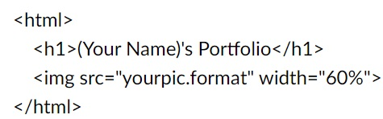

Fernando's Portfolio
Create Your Page
- Go to GitHub Page, you can access it through the following link: https://github.com/.
- Create your account (Sign up) or access it (Sign in) if you already created it before.
- Now that you are logged in, on the up-left corner of the page click the NEW button, so you can create the repository of your page.
- Fill the *Repository name* with the following pattern: your account name + .github.io - when you do that, this repository will automatically host your personal page. For example, my account name is FernandoBDAF and my personal page is FernandoBDAF.github.io.
- Navigate to your repository and hit the "Add file" button (in the high-middle of the page) and choose Upload files. You can drag the index.html file we are going to create in the next step.
- Open the folder of the project in VS Code and select file -> new file. Name it "index.html" and write the code you see in the image behind making the appropriate changes. Drag the photo you want to have on your page to the same folder and update the src tag.

- Now you are good to go, access your page! The address will be the exact name of the repository, look mine as an example: FernandoBDAF.github.io
Version Controle with GIT
- For more security, you should generate and add an SSH key to your development
enviroment and add it to your Github's account
- ls -al ~/.ssh: to see if existing SSH keys are present. Lists the files
in your .ssh directory, if they exist. More details here.
- Follow the steps here to generate and add a new SSH key to your computer
- After that, follow the steps here to add the SSH to your GitHub account.Please, note that you have to add twice for both authentication and signing.
- To exibit which commits were verified: click here.
- to sign your commit locally..
- pbcopy < ~/.ssh/id_ed25519.pub: to copy your key to clipboard
- $ git config --global user.signingkey [your_key]: change your key
- git config --global user.signingkey: to check your signingkey
- git config --local commit.gpgsign true: to auto sign commits
- Best way to configure GPG and sign
- Install git, create a local repositorie with clone..
- Git add, commit and push
The use of GIT in the development process
What branchs we are going to use
We are going to work in the GIT FLOW as standart. We want to have the following
branchs
- Main: production
- Develop: we put the features here to test before comminting to main
- Feature: for each new feature we create a branch with the name
feature/NAME. After the work is done here, we commit to develop
to test before commiting to main
- Between Main and Release we may have:
- Hotfix: when we have bugs we create branchs with name
hotfix/NAME. After the work is done we commit it to both
main and develope (because both have to be working well)
- Release: this is where we test before sending to develop
Creatin Branchs
- git branch: show all branchs
- git branch feature/NAME:
create the branch
- git switch [branch_name]: change branch
- :
You work with the branch, adding and commiting until you done with your
new feature
Commiting a new feature
- Merge the feature to the branch develop
- git checkout develop: Change Branch
- git merge feature/NAME: bring the changes to the develop
branch
- If you have any conflits, you have to fix it and then git
add . and git merge --continue.
- git add .: Add files
- git push origin master: Update the online version
- git commit -m "Merge feature into develop": Commit
- Remove the branch with this feature
git branch -d feature/NAME: Delete the branch, if there are not
commited work you need to use -D. To remove a remote branch, use
git push origin --delete Remote_branch_name